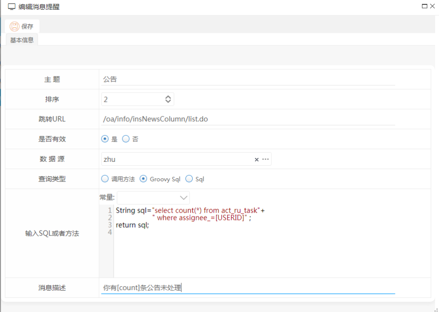
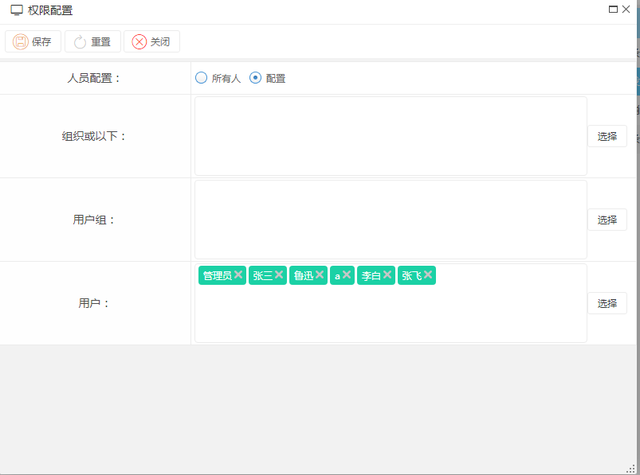
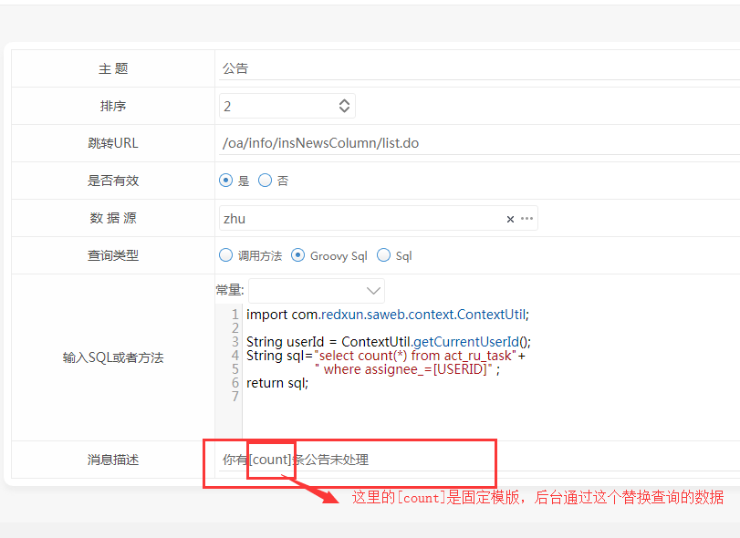

功能说明
消息提示管理是管理首页消息提示的管理，可以自定义消息提示的内容，也可设置权限给可以看见提示消息的用户，以及增删查改。
首先：需要你去系统菜单栏配置消息提示菜单，URL:/oa/info/oaRemindDef/list.do

首先你要添加提示消息；

这里的跳转URL是你在消息提示框点击该消息查看明细的路径；数据源可以在系统设置里面配置其他数据库的数据源，这里可以选择
访问其他数据的数据；
查询类型：
1.调用方法：方法写在portalScript.java里并且返回int，这里填写方法名：例：portalScript.getCountMySolList()
/**
* 我的流程方案栏目数据
* @return
*/
@MethodDefine(title = "我的流程方案", params = {@ParamDefine(title = "栏目主键", varName = "colId")})
public int getCountMySolList() {
String userId = ContextUtil.getCurrentUserId();
String tenantId = ContextUtil.getCurrentTenantId();
QueryFilter queryFilter= new QueryFilter();
ArrayList<BpmSolution> bpmSolutions=(ArrayList<BpmSolution>)bpmSolutionManager.getSolutions(queryFilter,false);
return bpmSolutions.size();
}
2.Groovy Sql:查询的返回值是数量；事例如上图；
3.sql::查询的返回值是数量；事例：select count(*) from act_ru_task where assignee_=[USERID] ;
消息描述：事例：你有[count]条公告未处理 这里[count]会被替换为查询的数字；
还可以设置权限给指定的人显示提示的消息。

注意：如果sql或者方法错误、数据源不存在，便不会显示你配置的该条消息。

配置好了，就可以查看了